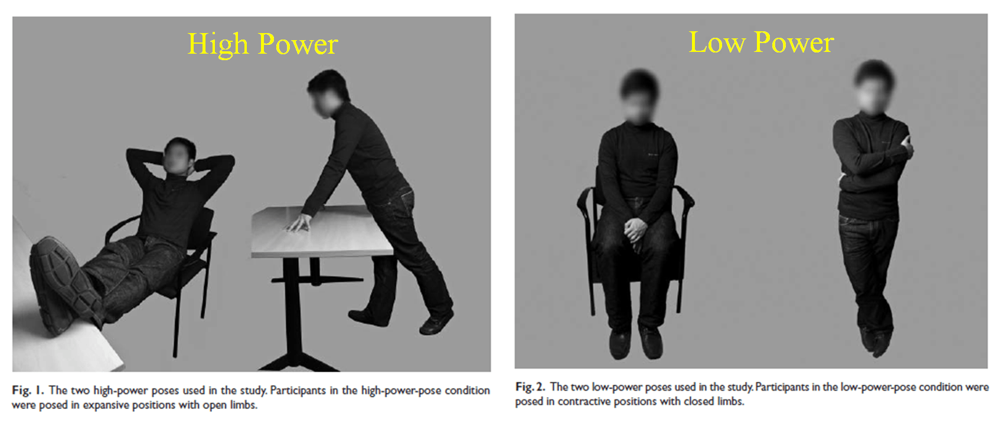
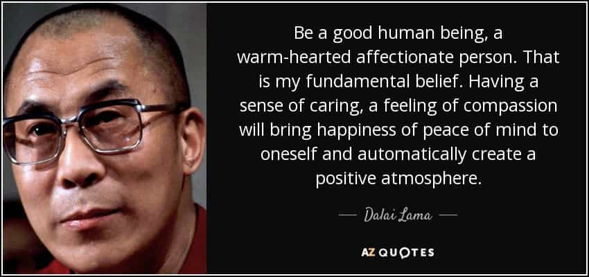

A couple of weeks ago, I discussed several basic techniques to increase your charisma. These techniques were all strictly “mechanical”: ways to gesture and speak that give one the appearance of having more “poise”. And these alone will put you above the mumbling simps and dweebs that most men are nowadays. But that stuff is for rookies.
If you really, and I mean really, want to tap into your latent charisma, you’re going to have to develop the ability to get yourself into a “state” of charisma; to be able to emotionally convey that you are a charismatic person. But the question is: how do you go about doing this?
The Three Elements of Charisma
Remember from the last article that the three elements of charisma are power, presence, and warmth. Each of these three things can be “turned on” via creative use of something you have already heard of—the placebo effect. Remember again that your personality as it is can just as easily be charismatic as non-charismatic—you are not forcibly changing your personality, you are merely learning a new set of skills that must be regularly practiced.
Our body language will express our mind no matter what, thus you can only hide it so much. To be truly charismatic you have to be genuine, or alternatively you have to FOOL yourself into being genuine, if that makes sense. If you are internally charismatic—calm and confident and warm—then you’ll have strong body language. Thus you must develop ways to get into mental states that produce charismatic behavior and body language.
We will start by gaining insight into charismatic mental states—what they are, how to access them, and practice them until they are effortless. Only afterwards start practicing external charismatic behaviors. Think of it like a building: it needs a foundation before you put all the fancy stuff on. This is like having unflappable confidence, being able to rebound from a hit to your ego. To be aware of/manage your mental state.
A key insight upon which all charisma is built: your mind can’t tell fact from fiction. Knowing this can help you get into the right charismatic mental state at will. This is the aforementioned placebo effect, and that is what most of the charisma building exercises revolve around. Beware the NOCEBO effect, though, in which you can psyche yourself down and adversely affect yourself.
And finally, before we get into the actual techniques, get into the mindset of thinking that any discomfort your body language shows (whether it be physical or mental) will reflect negatively upon you. This will help motivate you to utilize these techniques.
The Techniques
First of all, let us look at presence. Presence is the idea that you are “in the moment” and paying attention. The biggest impediment to this, I find from my own experience, is discomfort, in particular mental discomfort. In other words, if you are too busy thinking about stuff that is causing you anxiety, you’re going to seem flaky and dispassionate in the current moment, and thus not charismatic. Of course, recall from the last article that being TOO eager is not good either, but there’s a very big difference between “aloof and with poise” and “up his own ass with other concerns.”
A simple way to keep presence—assuming that you don’t have any mental concerns and you’re merely just drifting—is to forcibly think about the feeling in your toes while wriggling them. That’ll bring you “back” into your body—be sure to do this for just a second or two or else you’ll get distracted. Otherwise, just do what your father should have taught you, and maintain eye contact above all else.
If you want to negate/suppress negative emotions, there are two techniques I have found that work exceedingly well.
One is to destigmatize the discomfort: Reduce the “power” of the stigma by admitting that it’s normal. You’re not unusual for feeling that way, so it’s not a big deal. How to do this? Think of somebody who has gone through a similar experience and overcame it. Even simply imagining somebody you admire going through it can help you, even if they didn’t actually do it. Or you can just remember you’re not alone. Imagine a community of people struggling with it together, that’ll make you feel better about it. If possible, write down how you feel, doing something concrete makes it “stick” more—obviously don’t do this in public or while driving.
The other technique is “delving into the situation.” Imagine you’re in a shitty situation—what can help is to really delve into it—meaning give your full attention to the very sensations you’d instinctively want to push away. Really focus on every single minute sensation of your physical discomfort. Imagine that you’re a sommelier describing a wine: describe your pain in a similar way. It sounds paradoxical, but it really works—I use it when I do my neck bridges—it helps me last longer.
This gives your mind something concrete to focus on other than its growing conviction that this situation is unbearable. It also brings you into a full state of presence.
Power

To get power, you are going to have to use body language and visualization—and both of which can and should be practiced regularly.
Close your eyes and relax. Remember a past experience when you triumphed or won a great accomplishment. Obviously this is hard if you have lived a crappy life without accomplishments—it’s much easier to do this if you have accomplishments to be proud of, and if you have accomplishments you’re going to have more confidence and thus charisma. It all ties together.
Hear the sounds in the room: the murmurs of approval, the swell of applause. See people’s smiles and expressions of warmth and admiration. Feel your feet on the ground and the congratulatory handshakes. Above all, remember the feelings, the glow of confidence rising within you. If it doesn’t work the first time, remember that the more you practice visualization the more effective it’ll be.
Alternatively, you can recite a mantra or phrase if that works for you. Try moving while you visualize. Some people imagine “counselors” pep talking. The point with all these is to try them all and see what works for you specifically.
Another way to practice this is as follows: the next time you’re walking on a street or some other public place, imagine yourself as the swaggering brute you want to be, and act accordingly. Walk with confidence and take up space—mentally decide that you aren’t going to step aside for anybody, they will step aside for you. The more you do this, the more strong and confident you will feel. Beyond that, the “power poses” and similar body language can be learned about here.

Warmth
According to some, warmth is the most complicated of the three charisma elements, mainly due to how it can be further subdivided into gratitude, goodwill, and compassion. Some find this helpful to understand it, but as you will find out in a little bit, I have a way to hit all three of these “birds” with one stone.
Gratitude
To get this, think of things you already have—from material items or experiences to cherished relationships or accomplishments. Or think of nice things around you right now—anything; “the weather is nice” or “I am not sick”. This gives power and warmth. If you can access gratitude, an instant change will sweep through your body language from head to toe. Your face will soften, your whole body will relax. Your body language will emanate both warmth and a grounded confidence that people like.
Goodwill
Wish well towards someone. One simple but effective way is to try to find three things you like about the person. No matter whom it is you’re talking to, find three things to appreciate or approve of—even something like “their shoes are shined” or “they were on time.”
Compassion
More accurately called self-compassion. First, realizing that we’re experiencing difficulties. Second, responding with understanding toward ourselves when we are suffering or feel inadequate, rather than being harshly self-critical. Third, realizing that whatever we’re going through is commonly experienced by all human beings at some point in their lives. Again it’s a skill to develop.
What I find works for me, and is much simpler than all that, is to imagine a moment in your life when you were just in a state of joy, when you felt warm and fuzzy all over. For those who have children, the easiest way I could think of this would be to imagine how you felt when you first held your newborn child.
I don’t have any children, but I felt something akin to this when I held my nephew for the first time, so I imagine actually being a father would be similar but amplified. And again, it’s a lot easier to imagine this if you actually have a life experience that made you feel that way for real—as I famously advised in my earth-changing book, the easiest way to induce positive change in your life is just to do more new and exciting stuff.

We all like his quote about the righteousness of firearm ownership, but here’s another good one
Conclusion
With these tools, and a lot of practice, you will find yourself developing that “mysterious” magnetism, or rather a magnetism that losers think is mysterious. And once you know how to turn it on, you can just as easily turn it off.
Bear in mind of course that you can turn any of the elements on and off at will with enough practice, but I myself would advise that you should always have presence and power “turned on”, and utilize warmth on a toggle, to go from kind and loving patriarch to terrifying hangman at will. A man with presence and warmth, but no power, comes off as a mewling simp, and power and warmth without presence… I don’t even know what you would call that.
I will produce one more article on charisma probably in the next few weeks, discussing the various types of charisma that go with various personalities (and thus explain why terrible people often seem to be so successful and charismatic). Until then, practice these—as much as you can, every day. They’re like muscles in that they are made stronger with practice, but they’re not literally muscles so they don’t need a rest period.
Read More: How To Be More Charismatic